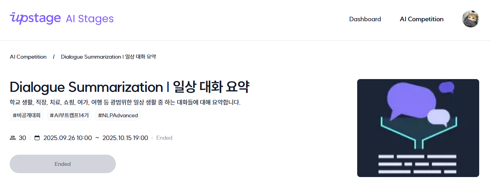

커널 아카데미 AI Lab #010 78–96일차 일상 대화 요약 경진대회
2025.10.24.(FRI)
NLP(Natural Language Processing)
78–86일차는 CV Generation, NLP 녹화강의를 수강했다. 87일차부터는 NLP 녹화강의 수강과 함께 세 번째 경진대회이자 자연어 처리 경진대회인 일상 대화 요약 대회가 진행됐다.
대회 소개
이번 대회는 최대 7명의 화자가 등장하는 499개의 대화문을 요약하는 대회로, 그 진행 기간은 09.26.–10.16.로 추석 연휴를 포함하여 약 3주간이였다. 대회 채점 기준은 Rouge-N, Rouge-L, Rouge-F1을 기반으로 한 자체 지표였고, 6명이 한 팀을 이루어 대회에 참여하게 되었다.
EDA/Augmentation
예측해야 할 target 데이터가 449개로 적은데 반해 학습에 쓰일 train 데이터는 12457개로 비교적 많았다. 그럼에도 여전히 충분한 숫자는 아니었기에 Augmentation이 필요했다. 이외에도 대화문 속에서 통일되지 않은 문장부호 및 고유명사 등의 노이즈를 확인할 수 있었다. Augmentation 및 denoising은 링크된 블로그의 내용을 참고하여 SR(Synonym Replacement), RI(Random Insertion), RS(Random Swap), RD(Random Deletion) 네 가지 기법을 활용하여 진행했다.
Modeling/Training
모델은 gogamza, koBART, LoRA SOLA 모델을 활용해봤고, 이 외에도 업스테이지 측에서 제공하는 Solar Pro API를 활용해 대화 요약을 진행해보기도 했다.
Validation/Prediction
K-fold Cross Validation 기법을 활용하여 평가를 진행했다.
대회 결과
최종 채점 직전까지만 해도 5개 팀 중 꼴찌를 기록하고 있었는데, 예상치 못하게 최종 채점에서 결과가 크게 뒤집히며 2등을 달성하게 됐다. 다른 팀들은 중간 채점에 맞춰 overfitting 돼 있었고, 우리 팀은 비교적 general한 상황에 맞춰져 있었던 것으로 보인다.
아쉬웠던 점
Solar Pro API를 더 활용하지 못 한 점이 아쉬웠다. 프롬프트 엔지니어링에 익숙치 않아 그 성능을 충분히 활용하지 못 한 느낌이 들었다.